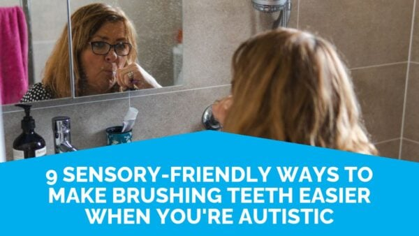
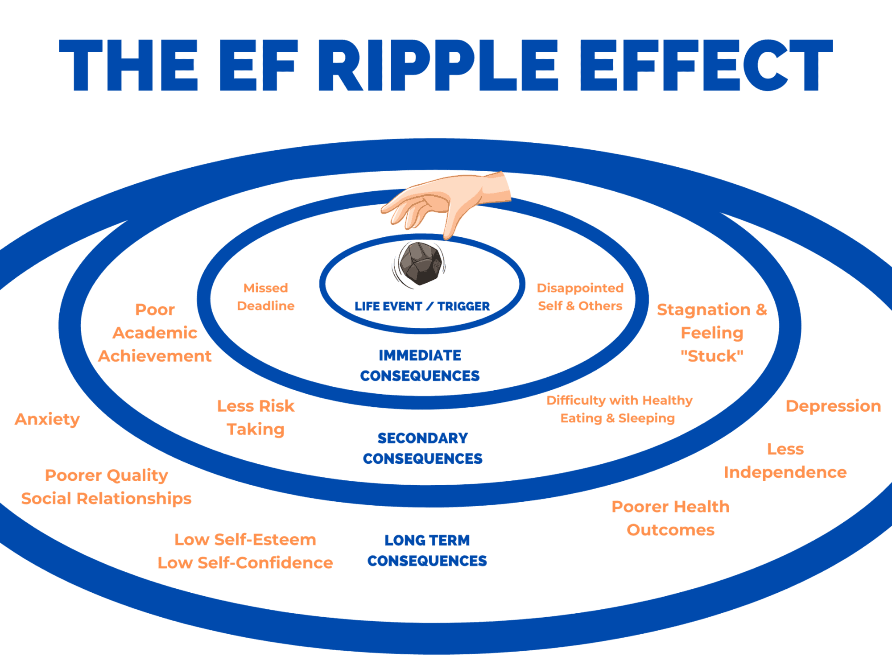
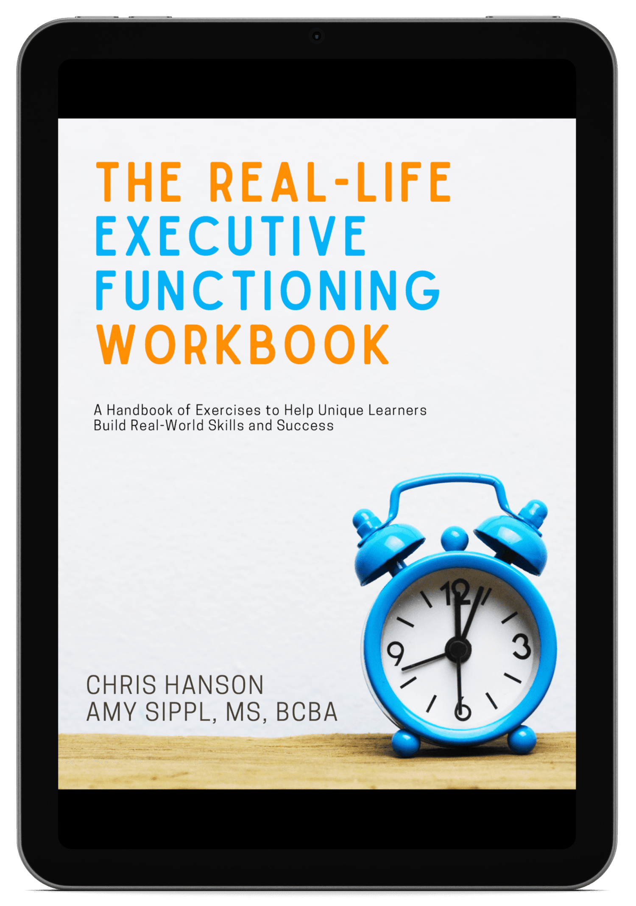

Become Your Own Best Advocate
And lean into...
- Greater autonomy & independence
- A healthier internal narrative about your neurodivergence
- Improved executive functioning
- Higher grades
- Stronger motivation
- Better time management
- Greater self-confidence
- Stronger relationships
- More order and organization
What Is Executive Functioning & Why Is It Important?
Executive Functioning (EF) is at the heart of thriving amidst life's challenges. Executive functioning helps us get things done. While specific EF skills include task initiation, organization, flexibility and more, these mental skills are not just about getting organized or managing time. They are crucial for handling emotions, focusing attention, and navigating life's unexpected twists & turns.
At Life Skills Advocate, we recognize the unique challenges neurodivergent individuals face in developing and sustaining executive functioning skills.
Just like ripples in a pond, difficulties with EF can extend far and wide, impacting academic, professional, personal life, and emotional well-being. This "EF Ripple Effect" highlights the importance of addressing these real-world skills to prevent a cascade of other challenges*.
Our approach, deeply rooted in a shared lived experience with neurodivergence and tailored to individual needs, empowers our clients to grow their executive functioning skills, paving the way for success at school, work, and daily life.
*Diamond, A. (2013). Executive Functions. Annual review of psychology, 64, 135-68. rel="noopener" >https://doi.org/10.1146/annurev-psych-113011-143750.
Learn More About The EF Ripple Effect
How Can Life Skills Advocate Help?
At Life Skills Advocate, our coaches bring a combination of professional expertise and lived experience with neurodivergence to empower you or your loved one's path towards greater autonomy & independence.
Our comprehensive Real-Life Executive Function Coaching supports individuals across all life stages, addressing their unique challenges and goals.
In everything we do, we prioritize a client-centered, shame-free approach, with a strong focus on structure and predictability, ensuring that every aspect of our coaching is directly applicable to your daily challenges and long-term goals.
Discover How Coaching With LSA Can Support YOU
Whether you're a high school student, college student, professional, or somewhere in between, our personalized coaching approach focuses on your unique needs and aspirations, starting at age 14.
High School Students
Learn MoreCollege Students
Learn MoreYoung Adults
Learn MoreAdults
Learn MoreAcross THESE Key Areas
Life is interconnected, and challenges in one area—like school—can often spill over into others, such as home or work. At Life Skills Advocate, we understand that your needs aren't confined to just one domain. Our coaching approach considers the whole picture, providing support across various aspects of life. Whether you're seeking help with a specific area or navigating multiple challenges at once, we're here to guide you through it all.
Who is Life Skills Advocate?
Life Skills Advocate, founded in 2019 by special educator Chris Hanson, is deeply rooted in shared neurodivergent experiences. Chris, who personally navigates ADHD, anxiety, and depression, understands the profound impact of having dedicated advocates. His vision for Life Skills Advocate emerged from his own journey, aspiring to offer the supportive services he wished were available during his formative years.
Since our inception, we've cultivated a remarkable team, united by our own experiences with neurodivergence. This personal connection to our work fuels our commitment to empowering neurodivergent individuals and families.
With everything we do, our mission is to provide neurodivergent individuals and families with the life skills training, executive functioning support, mentorship & coaching they need to build and sustain autonomy & independence.
Meet Our Whole TeamOur Mission
Uplifting the neurodivergent community to embrace their strengths and self-advocate with confidence.
Book Your Complimentary 30-Minute Coaching Discovery Meeting With Amy 👇

Who Is Coaching For?
What to Expect During the Discovery Meeting
1
Welcome 😃
Introduce yourself and learn how coaching with LSA may be able to help.
2
Goals 🎯
Discuss your goals and expectations to customize your coaching experience.
3
Overview 🔍
Discover more about our coaching process and how it can benefit you.
4
Next Steps ✔️
Get paired with the right coach & book a foundation session.
What Our Clients & Parents Are Saying
"Our son was constantly overwhelmed by school, and we felt like we had to constantly monitor him. After coaching, he's much better at organizing his time and getting things done on his own. We no longer need to hover over his shoulder to ensure he stays on track."
Lisa
Parent of high school student
"Coaching has helped me so much this semester. I used to feel really lost about how to approach big assignments and exams, but now I finally feel like I have a plan and tools that work for me. I'm more productive, and I feel less anxious about deadlines."
Tyler
College Student
"Coaching has made a huge difference for me. I've seen progress in my self-awareness and compassion toward myself, especially in situations that are beyond my control. The support has been validating, and I feel more equipped to manage my challenges."
Jade
Adult Coaching Client
Partnerships & Professional Affiliations
We've launched Neurowyld
Our new shop featuring neurodivergent-affirming merch that celebrates comfort, advocacy, and identity. Discover sensory-friendly, mission-driven designs that let you show up as your authentic self.
Every purchase helps expand coaching access and empower our community.
Shop NeurowyldWe Wrote the Workbook on Executive Functioning
In 2021, we published our Real-Life Executive Functioning Workbook, a comprehensive guide designed to tackle real-life executive functioning challenges.
This resource is an invaluable tool for individuals, parents, and teachers, providing practical strategies and insights to enhance daily living and learning.
Having sold over 3,000 copies, it has become a trusted companion, aiding countless students in their journey towards improved executive functioning and greater success.
Learn More